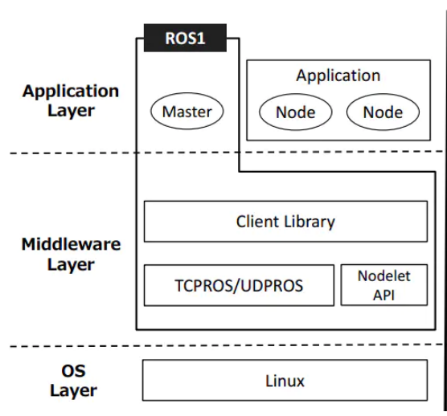

1 ROS 项目结构
1.1 catkin workspace
Catkin workspace 是创建、修改和编译 Catkin 软件包的目录。Catkin 的工作区可以直观地描述为一个仓库，其中包含各种 ROS 项目，便于系统的组织、管理和调用。
- Create workspace:
mkdir -p ~/catkin_ws/src # 创建文件夹
cd ~/catkin_ws/src # 进入文件夹
catkin_init_workspace # 将当前目录初始化为 ROS 工作区
cd .. # 返回父目录
catkin_make # 在工作区中构建代码
catkin 的结构非常清晰。它包括三个路径：src、build 和 devel。在某些编译选项下，它还可能包含其他路径。但这三个文件夹是 catkin 编译系统的默认文件夹。它们的具体功能如下：
src/: ROS catkin 软件包（源代码包）
build/: catkin的缓存信息和中间文件 (CMake)
devel/: 生成的目标文件（包括头文件、动态链接库、静态链接库、可执行文件等）、环境变量
一个简单的工作区是这样的
workspace_folder/ -- WORKSPACE
src/ -- SOURCE SPACE
CMakeLists.txt -- 'Toplevel' CMake 文件，由 catkin 提供
package_1/
CMakeLists.txt -- package_1 的 CMakeLists.txt 文件
package.xml -- package_1的package清单
...
package_n/
CMakeLists.txt -- package_n 的 CMakeLists.txt 文件
package.xml -- package_n的package清单
1.2 ROS 软件包
包不仅是 Linux 上的软件包，也是 catkin 编译的基本单位。我们使用 catkin_make 来编译的对象就是每个 ROS 软件包。
+--PACKAGE
+-- CMakeLists.txt
+-- package.xml
+-- src/
+-- include/
+-- scripts/
+-- msg/
+-- srv/
+-- urdf/
+-- launch/
CMakeLists.txt: 定义软件包的名称、依赖关系、源文件、目标文件和其他编译规则。它是软件包的重要组成部分。
package.xml: 描述软件包的名称、版本号、作者、依赖关系等信息，是软件包不可或缺的组成部分。
src/: 存储 ROS 源代码，包括 C++ 源代码 (.cpp) 和 Python 模块 (.py)
include/: 存储与 C++ 源代码相对应的头文件
scripts/: 存储可执行脚本，如 shell 脚本 (.sh) 和 Python 脚本 (.py)
msg/: 以自定义格式（.msg）存储信息
srv/: 以自定义格式（.srv）存储服务
urdf/: 存储机器人的模型描述（.urdf 或 .xacro）和 3D 模型文件（.sda、.stl、.dae 等）。
launch/: 存储启动文件（.launch 或 .xml）
创建自己的 package:
- 命令格式:
catkin_create_pkg 命令会要求你输入软件包名称。如有必要，您还可以稍后添加其他依赖软件包：
catkin_create_pkg <package_name> [depend1] [depend2] [depend3]
- 例如:
catkin_create_pkg beginner_tutorials std_msgs rospy roscpp
2 ROS 通信架构

2.1 Master and node（主机和节点）
1 Master（主机）
节点管理器。每个节点在启动前都必须向主节点注册，并管理节点之间的通信。
2 roscore
启动主控程序还将启动 rosout（日志管理）和参数服务器（参数管理器）
3 node（节点）
pkg 中的 ROS 进程和运行可执行文件的实例。
$rosrun [pkg_name] [node_name] # 启动
$rosnode list # 列出当前运行的节点信息
$rosnode info [node_name] # 显示节点的详细信息
$rosnode kill [node_name] # 结束一个节点
4 launch
启动主节点和多个节点
$roslaunch [pkg_name] [file_name.launch]
2.2 Service and Topic（服务和主题）
我们提供一些与 mycobot 互动的服务和话题。
1 Service
在命令行中输入:
source ~/catkin_ws/devel/setup.bash # 添加环境变量
roslaunch mycobot_pro450_communication communication_service.launch
支持参数：
- port：连接串行字符
- baud：波特率
打开新的命令行:
# 显示活动服务信息
rosservice list
#/get_joint_angles
#/get_joint_coords
#/set_joint_angles
#/set_joint_coords
#/switch_gripper_status
相关命令和说明:
| 命令 | 详细说明 |
|---|---|
| rosservice list | 显示活动服务信息 |
| rosservice info [service name] | 显示指定服务的信息 |
| rosservice type [service name] | 显示服务类型 |
| rosservice find [service name] | 查找指定服务类型的服务 |
| rosservice uri [service name] | 显示 ROSRPC URI 服务 |
| rosservice args [service name] | 显示服务参数 |
| rosservice call [service name] [parameters] | 请求提供带输入参数的服务 |
2 主题
在命令行中输入:
source ~/catkin_ws/devel/setup.bash
roslaunch mycobot_pro450_communication communication_topic.launch
支持参数:
- port：连接串行字符
- baud：波特率
打开新的命令行：
# 显示活动服务信息
rostopic list
#/mycobot/angles_goal
#/mycobot/coords_goal
#/mycobot/angles_real
#/mycobot/coords_real
#/mycobot/pump_status
相关命令和说明:
| 命令 | 详细说明 |
|---|---|
| rostopic list | 显示活动主题列表 |
| rostopic echo [topic name] | 实时显示指定主题的信息内容 |
| rostopic find [type name] | 显示带有指定类型信息的线程 |
| rostopic type [topic name] | 显示指定主题的信息类型 |
| rostopic bw [topic name] | 显示指定主题的信息带宽（带宽） |
| rostopic hz [topic name] | 显示指定主题的信息数据发布周期 |
| rostopic info [topic name] | 显示指定主题的信息 |
| rostopic pub [topic name] [message type] [parameters] | 以指定的主题名称发布消息 |
服务与主题的区别:
| 服务 | 主题 | |
|---|---|---|
| 同步 | 异步 | 同步 |
| 沟通模式 | pub/sub | server/client |
| 基本协议 | ROSTCP/ROSUDP | ROSTCP/ROSUDP |
| 反馈机制 | No | Yes |
| 缓冲区 | Yes | No |
| 实时 | 弱 | 强 |
| 节点关系 | 多对多 | 一对多 |
| 适用情景 | 数据传输 | 逻辑处理 |
2.3 msg 和 srv 简介
- msg：msg 文件是描述 ROS 消息字段的简单文本文件。
- srv：srv 文件用于描述服务。它由两部分组成：请求（request）和响应（response）。
msg 文件保存在软件包的 msg 目录中，srv 文件保存在 srv 目录中。
1 rosmsg
rosmsg 是一种命令行工具，用于显示有关 ROS 消息类型的信息。
rosmsg 演示:
rosmsg show # 显示信息描述
rosmsg info # 显示信息
rosmsg list # 列出所有消息
rosmsg md5 # 显示 md5 加密信息
rosmsg package # 显示功能包下的所有信息
rosmsg packages # 列出包含信息的功能包
rosmsg list 将列出当前 ROS 中的所有 msgs
rosmsg packages 列出包含信息的所有软件包
rosmsg package 列出软件包下的所有 msgs
//rosmsg package # 软件包名称
rosmsg package turtlesim
- rosmsg show 显示信息描述
//rosmsg show # 消息名称
rosmsg show turtlesim/Pose
# 结果:
float32 x
float32 y
float32 theta
float32 linear_velocity
float32 angular_velocity
rosmsg info 工作原理与 rosmsg 显示相同
rosmsg md5 一种确保数据传输一致性的检查算法
2 rossrv
rossrv 是一种显示 ROS 服务类型信息的命令行工具，其语法与 rosmsg 非常相似。
rossrv show # 显示服务信息详情
rossrv info # 显示服务信息
rossrv list # 列出所有服务信息
rossrv md5 # 显示 md5 加密服务信息
rossrv package # 显示软件包下的所有服务信息
rossrv packages # 显示包含服务信息的所有软件包
rossrv list 将列出当前 ROS 中的所有 srv 消息
rossrv packages 列出包含服务信息的所有软件包
rossrv package 列出软件包下的所有 msgs
//rossrv package # 软件包名称
rossrv package turtlesim
- rossrv show 显示信息描述
//rossrv show # 消息名称
rossrv show turtlesim/Spawn
# result:
float32 x
float32 y
float32 theta
string name
---
string name
rossrv info 效果与 rossrv show 相同
rossrv md5 对服务数据使用 md5 校验和（加密
3 URDF 简介
- 统一机器人描述格式（Unified Robot Description Format），简称 URDF。ROS 中的 urdf 包包含 URDF 的 C++ 解析器，URDF 文件以 XML 格式描述机器人模型。 *URDF 不能单独使用，需要与 Rviz 或 Gazebo 结合使用。URDF 只是一个需要在 Rviz 或 Gazebo 中渲染成图形机器人模型的文件。
3.1 urdf 文件说明
代码示例:
这里只截取部分代码进行显示：
<?xml version="1.0"?>
<robot xmlns:xacro="http://www.ros.org/wiki/xacro" name="firefighter" >
<xacro:property name="width" value=".2" />
<link name="base">
<visual>
<geometry>
<mesh filename="package://mycobot_description/urdf/mycobot_pro_450/PRO450_J1.dae"/>
</geometry>
<origin xyz = "0.0 -0.11 0 " rpy = " 0 0 0"/>
</visual>
<collision>
<geometry>
<mesh filename="package://mycobot_description/urdf/mycobot_pro_450/PRO450_J1.dae"/>
</geometry>
<origin xyz = "0.0 -0.11 0 " rpy = " 0 0 0"/>
</collision>
</link>
<link name="link1">
<visual>
<geometry>
<mesh filename="package://mycobot_description/urdf/mycobot_pro_450/PRO450_J2.dae"/>
</geometry>
<origin xyz = "0.0405 0 0.0475 " rpy = " -1.5708 0 -1.5708 "/>
</visual>
<collision>
<geometry>
<mesh filename="package://mycobot_description/urdf/mycobot_pro_450/PRO450_J2.dae"/>
</geometry>
<origin xyz = "0.0405 0 0.0475 " rpy = " -1.5708 0 -1.5708 "/>
</collision>
</link>
<link name="link2">
<visual>
<geometry>
<mesh filename="package://mycobot_description/urdf/mycobot_pro_450/PRO450_J3.dae"/>
</geometry>
<origin xyz = "0.0598 0.005 -0.203 " rpy = " 0 0 1.5708 "/>
</visual>
<collision>
<geometry>
<mesh filename="package://mycobot_description/urdf/mycobot_pro_450/PRO450_J3.dae"/>
</geometry>
<origin xyz = "0.0598 0.005 -0.203 " rpy = " 0 0 1.5708"/>
</collision>
</link>
<joint name="joint1" type="revolute">
<axis xyz="0 0 1"/>
<limit effort = "1000.0" lower = "-2.8797" upper = "2.8797" velocity = "0"/>
<parent link="base"/>
<child link="link1"/>
<origin xyz= "-0.0045 0 0.155" rpy = "0 0 0"/>
</joint>
<joint name="joint2" type="revolute">
<axis xyz="1 0 0"/>
<limit effort = "1000.0" lower = "-2.0943" upper = "2.0943" velocity = "0"/>
<parent link="link1"/>
<child link="link2"/>
<origin xyz= "0.05 0 0.048" rpy = "0 0 0"/>
</joint>
</robot>
可以看出，urdf 文件并不复杂，主要由 "link "和 "joint "两部分组成，这两部分不断重复。
3.2 link 部分
link 元素描述了一个具有惯性、视觉特征和碰撞属性的刚体
3.2.1 属性
名字： 用于描述 link 本身的名称
3.2.2 内容
<inertial>(可选的)- 连杆的惯性特性
<origin>(可选，未指定时默认为身份)- 定义惯性参考系相对于连杆坐标系的参考坐标。该坐标必须在连杆重心处定义，其坐标轴不得与惯性主轴平行。
- xyz (可选，默认为零向量) 表示在 x、y、z x、y、zx、y、z 方向上的偏移量，单位为米。
- rpy(可选：defaults to identity if not specified) 表示坐标轴沿 RPY 方向的旋转角度，单位为弧度。
<mass>连杆的质量特性<inertia>3×3 转动惯量矩阵，由六个独立量组成：ixx、ixx、ixz、iyy、iyz、izz。
<visual>(可选的)- 连杆的视觉属性。它用于指定连杆显示的形状（矩形、圆柱形等）。同一连杆中可以有多个视觉元素，连杆的形状由两个元素构成。一般来说，模型比较复杂，可以通过 soildwork 绘制生成 stl 调用，简单的形状如添加末端效应器可以直接编写。同时，可以根据理论模型与实际模型的差距调整几何图形的位置。
<namel>(可选的) 连杆几何形状的名称。<origin>(可选，未指定时默认为身份)- 相对于连杆坐标系的几何坐标系。
- xyz (可选：默认为零向量) 表示在 x、y、z x、y、zx、y、z 方向上的偏移量，单位为米。
- rpy (可选：defaults to identity if not specified) 表示坐标轴沿 RPY 方向的旋转角度，单位为弧度。
<geometry>（必需）- 可视化的形状，可以是以下形状之一：
<box>一个包含长、宽、高等元素的矩形。原点位于中心。<cylinder>圆柱体，元素包括半径和长度。原点中心。<sphere>球体，包含半径的元素。原点位于中心。<mesh>由文件确定的网格还提供了一个比例尺来定义其边界。建议使用 Collada .dae 文件，也支持 .stl 文件，但必须是本地文件。
<material>(可选)- 可视化组件的材料。它可以在链接标记之外定义，但必须在机器人标记之内。在链接标记外定义时，链接名称必须加引号。
<color>(可选) 颜色，由红/绿/蓝/α 组成，范围 [0,1]。<texture>(可选) 材料属性，由文件定义。
<collision>(可选)- 连杆的碰撞属性。碰撞属性不同于连杆的视觉属性，通常使用简单的碰撞模型来简化计算。同一连杆可以有多个碰撞属性标签，连杆的碰撞属性表示由其定义的一组几何图形组成。
<name>(可选) 指定连杆几何形状的名称<origin>(可选，defaults to identity if not specified)- 碰撞组件的参考坐标系是相对于链接坐标系的参考坐标系而言的。
- xyz (可选, 默认零向量) 表示在 x、y、z x、y、zx、y、z 方向上的偏移量，单位为米。
- rpy (可选, defaults to identity if not specified) 表示坐标轴沿 RPY 方向的旋转角度，单位为弧度。
<geometry>与上述几何元素描述相同
详细的元素和每个元素的作用可登录 官方文档 查看
3.3 joint part
关节(JOINT)部分描述了关节的运动学和动力学特性，并规定了关节的安全限制。
3.3.1 joint 特性:
name：
指定关节的唯一名称
type：
指定接头类型，类型可以是以下之一：
- revolute - 沿轴线旋转的铰链关节，其范围由上下限指定。
- 棱柱形 Continuous - 连续铰接接头，可绕轴旋转，没有上下限。
- 固定 Prismatic - 沿轴滑动的滑动接头，其滑动范围由上下限规定。所有自由度都被锁定。这种关节不需要轴、校准、动力学、限值或安全控制器。
- 浮动 Floating - 该关节允许所有 6 个自由度的运动。
- 平面 Plane - 该关节允许在垂直于轴线的平面内运动。
3.3.2 关节要素
<origin>(可选，defaults to identity if not specified) 在从父链接到子链接的转换中，接头位于子链接的原点。修改该参数可以调整连杆的位置。可用于调整实际模型与理论模型之间的误差，但不建议大幅修改，因为该参数会影响连杆 stl 的位置，容易影响碰撞检测效果。- xyz (可选: 默认为零向量) 代表 x、y、z 轴方向的偏移量，单位为米。
- rpy (可选: 默认为零向量) 表示绕固定轴的旋转角度：滚动绕 x 轴，俯仰绕 y 轴，偏航绕 z 轴，用弧度表示。
<parent>(必需)- 父链接的名称是必填属性。
- link
父链接的名称是机器人结构树中链接的名称。
<child>(必需)- 子链接的名称是必填属性。
- link
子链接的名称是机器人结构树中链接的名称。
<axis>(可选: 默认为 (1,0,0))- 关节轴位于关节坐标系中。这是旋转轴（旋 转关节）、棱柱关节的运动轴和平面关节的标准平面。该轴在关节坐标系中指定。修改该参数可以调整关节绕其旋转的轴线。它通常用于调整旋转方向。如果模型旋转方向与实际旋转方向相反，只需乘以-1 即可。固定关节和浮动关节不需要这个元素。
- xyz(必需)
代表轴向量的 x , y , z x,y,zx,y,z 分量，为标准化的向量。
<calibration>(可选)- 关节的参考点，用于修正关节的绝对位置。
- rising (可选) 当关节向前移动时，参考点会触发一个上升沿。
- falling (可选) 当关节向前移动时，参考点触发下降沿。
<dynamics>(可选)- 该元素用于指定接头的物理属性。其值用于描述接头的建模性能，尤其是在模拟过程中。
<limit> (当关节是旋转或平移关节时必需)
- 该元素是关节运动学约束。
- lower (可选, 默认为 0) 指定关节运动范围下限的属性（旋转关节的单位是弧度，棱柱关节的单位是米）。连续关节忽略该属性。
- upper (可选, 默认为 0) 指定关节运动范围上限的属性（旋转关节的单位是弧度，棱柱关节的单位是米）。连续关节忽略该属性。
- effort (必需) 该属性指定了接头运行时的最大力。
- velocity (必需) 该属性指定了联合运行时的最大速度。
<mimic>(可选)
- 该标签用于指定一个已定义的 joint，以模仿现有 joint。该 joint 的值可通过以下公式计算：
value = multiplier * other_joint_value + offset - joint(必需) 要模仿的关节名称。
- multiplier(可选) 指定上述公式中的乘数系数。
- offset(可选) 指定上述公式中的偏移项。默认值为 0
<safety_controller> (可选)
- 该元素是安全控制限制。该元素下的数据将被读入 move_group，但实际上是无效的。Move_group 会跳过此限制，直接读取限制下的参数内容。同时，设置该元素可能会导致规划失败。
- soft_lower_limit (可选, 默认为 0) 此属性指定联合安全控制边界的下限，即联合安全控制的起始限制点。该值必须大于上述限制的下限值。
- soft_upper_limit (可选, 默认为 0) 该属性指定联合安全控制边界的上限，即联合安全控制的起始限制点。该值必须小于上述限制的上限值。
- k_position(可选, 默认为 0) 该属性用于描述位置和速度之间的关系。
- k_velocity(必需) 这一特性用于描述力和速度之间的关系。
详细的元素和每个元素的作用可以到 http://wiki.ros.org/urdf/XML/joint查看。
4 常用命令工具
在 ROS 中，有许多常用的命令行工具，可以帮助您开发、调试和管理 ROS 节点等。下面是一些常用的 ROS 命令行工具：
4.1 编译工作区
caktin_make
4.2 roscore
启动 ROS 主节点，在运行 ROS 节点之前，通常需要先启动 roscore
roscore
4.3 rosrun
运行指定的 ROS 节点。
rosrun package_name node_name
4.4 roslaunch
使用启动文件启动一个或多个 ROS 节点。
roslaunch package_name launch_file.launch
4.5 rosnode
查看运行中的 ROS 节点信息。
rosnode list
rosnode info node_name
4.6 rostopic
查看有关运行 ROS 主题的信息。
rostopic list
rostopic echo topic_name
4.7 rosservice
查看和调用 ROS 服务。
rosservice list
rosservice call service_name
4.8 rosparam
获取和设置 ROS 参数。
rosparam get parameter_name
rosparam set parameter_name value
4.9 rosmsg
查看 ROS 消息类型。
rosmsg show message_type
4.10 rosdep
安装 ROS 软件包的依赖项。
rosdep install package_name
4.11 Environment variables
查看 ROS_PACKAGE_PATH 环境变量
echo $ROS_PACKAGE_PATH